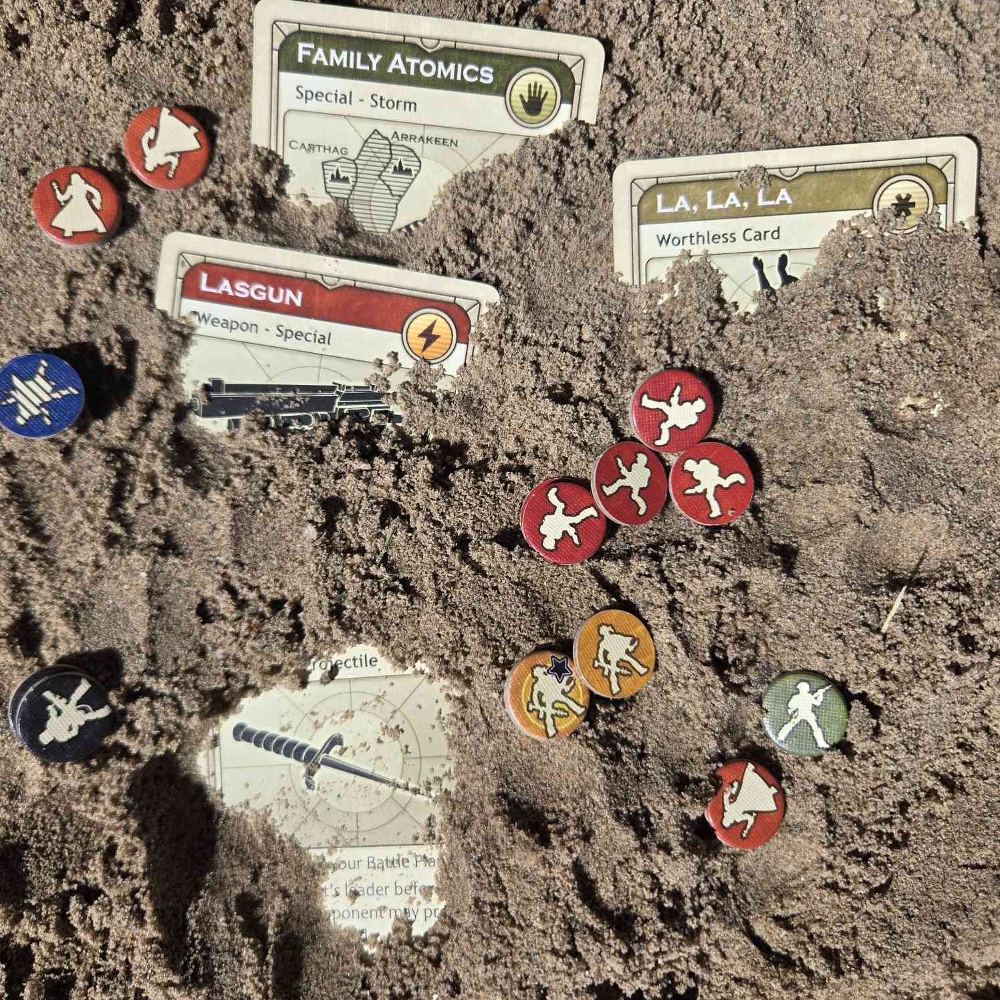

Sorry for audio issues We are fixing them for the next epsiode.
In this episode Pine and Awptea talk about their love of dune and how the game feels not like a professionally published game but a first draft of a game.
(this page is WIP. link to General Sandbox Page w/ RSS feed to go here)
The faction sheets and rulebook for Dreamrules can be found here and in the Dune Tabletop Discord
All music by Stéphane Picq and Philippe Ulrich for Dune (1992) by Cryo Interactive for MSDOS
All voice lines are also from the game.
Special thanks to TGames and TheUploader on the Abandonware France forums for extracting and sharing all the audio files from the game.